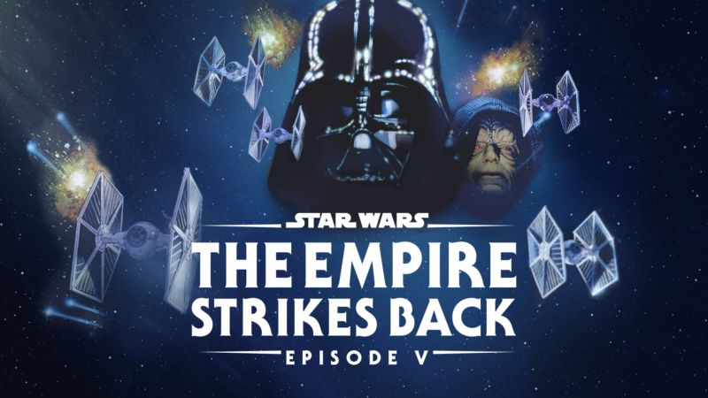

Star Wars Episode V: The Empire Strikes Back
Clasificacion: PG-13
Fecha de estreno: 1980-07-31
Duracion: 2h 4m
Genero: Ciencia Ficcion/Accion
Sinopsis: Son tiempos adversos para la rebelión. Aunque la Estrella de la Muerte ha sido destruida, las tropas imperiales han hecho salir a las fuerzas rebeldes de sus bases ocultas y los persiguen a través de la galaxia. Tras escapar de la terrible Flota Imperial, un grupo de guerreros de la libertad, encabezados por Luke Skywalker, ha establecido una nueva base secreta en el remonto mundo helado de Hoth.